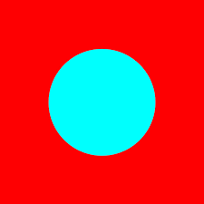

3, Inverting the Spectrum
The believer in NECESSITY faces a more serious difficulty. Let CONTINGENCY be the thesis that both COLOR REP Æ COLOR FEEL and COLOR FEEL Æ COLOR REP (and hence NECESSITY) are false. According to CONTINGENCY there is at best a contingent connection between green-feeling experiences and green-representing experiences. John Locke has described a case which is the basis of an argument for CONTINGENCY. We are to suppose, according to Locke (1689, II, xxxii, 15), that:
...by the different Structure of our Organs, it were so ordered, that the same Object should produce in several Men’s Minds different Ideas at the same time; v.g., if the Idea, that a Violet produced in another Man’s Mind by his Eyes, were the same that a Marigold produced in another Man’s, and vice versa.
Locke is suggesting that we can conceive of a subject who has yellow-feeling experiences when looking at violets, and blue-feeling experiences when looking at marigolds. Since this state of affairs is conceivable, we have a positive, if defeasible, reason to believe it to be possible.
Let Nonvert be a normal subject—Nonvert enjoys blue-feeling experiences when looking at violets and yellow-feeling experiences when looking at marigolds. Invert, however, is phenomenologically Inverted in the way that Locke describes. Invert has yellow-feeling experiences when looking at violets and blue-feeling experiences when looking at marigolds. In normal subjects blue-feeling and blue-representing experiences coincide. Consider now Invert’s  visual experience of a violet. It is a yellow-feeling experience, but is it also yellow-representing? Or are Invert’s yellow-feeling experiences, in fact, blue-representing? There are at least four lines of thought that suggest that Invert’s yellow-feeling experiences are blue-representing.
(a) The color perceptions of normal subjects are mostly veridical. Thus when Nonvert, by hypothesis a normal subject, visually represents violets as blue he is not suffering from any illusion—violets do in fact have the color that Nonvert’s visual experience attributes to them. The reason that the blue-representing experiences of normal subjects are mostly veridical is that they reliably track blue things, and it is because they are standardly caused by the instantiation of blueness that such experiences are blue-representing. Invert’s yellow-feeling experiences 7 reliably track blue things. Because Invert’s yellow-feeling experiences are standardly caused by the instantiation of blueness, Invert’s yellow-feeling experiences are, in fact, blue-representing.
(b) Invert and Nonvert are both competent English speakers. They at least apply their color words to the same range of things. It is plausible to suppose that Invert means by “blue” what the rest of us mean. Invert describes violets as looking blue to him and as not looking yellow. If, however, Invert’s yellow-feeling experiences were also yellow-representing, then Invert would be radically mistaken about how things look to him. But surely this is implausible. We might occasionally be wrong about how things appear to us, but surely we could not be systematically mistaken about the appearance of things. And so Invert’s yellow-feeling experiences are, in fact, blue-representing.
(c) Invert’s experience of violets is yellow-feeling. Violets are in fact blue, and so if Invert’s experience were also yellow-representing, his perceptual experience would be illusory. To claim that Invert’s yellow-feeling experiences are yellow-representing would be to attribute widespread and systematic error to Invert’s perceptual experience. The principle of charity, however, is partly constitutive of our practice of interpretation. When interpreting the thought and talk of others we are rationally constrained to ascribe mostly true contents. And so too for perceptual contents. We are therefore rationally constrained to interpret Invert’s yellow-feeling experience as blue-representing.
(d) Suppose that Invert’s yellow-feeling experience when looking at a violet is yellow-representing. If violets are in fact blue, then Invert’s experience is, at least in part, illusory. Invert, however, can use his color vision to successfully navigate through the world. Given his success when dealing with his environment as visually represented, there is, at the very least, a presumption that Invert is not systematically misrepresenting the colors of things. And so Invert’s yellow-feeling experiences are, in fact, blue-representing.
If any of these arguments are persuasive, then one could argue for CONTINGENCY as follows. Consider Invert looking at a violet. Invert’s visual experience of a violet is yellow-feeling. But his experience represents the violet as blue. So Invert’s experience is yellow-feeling and blue-representing, and Nonvert’s experience is blue-feeling and blue-representing. There thus could be two subjects whose visual experience shared the same total content but whose color phenomenology differed. And hence COLOR REP Æ COLOR 8 FEEL fails, and NECESSITY is false. Consider Invert looking at a marigold. Invert’s visual experience of a marigold is blue-feeling but is also yellow-representing. Nonvert, however, when looking at a violet has a blue-feeling experience that is also blue-representing. There thus could be two subjects with the same color phenomenology, but whose experience differed in content. And hence COLOR FEEL Æ COLOR REP fails, and NECESSITY is false. Since both COLOR REP COLOR FEEL and COLOR FEEL Æ COLOR REP are false, CONTINGENCY is true.
If NECESSITY is false and CONTINGENCY true, then intentionalism is false as well. If there could be a difference in color phenomenology without a difference in content, then there could be no question of identifying phenomenal properties with representational features of experience. We do not believe, however, that content phenomenology can vary independently.